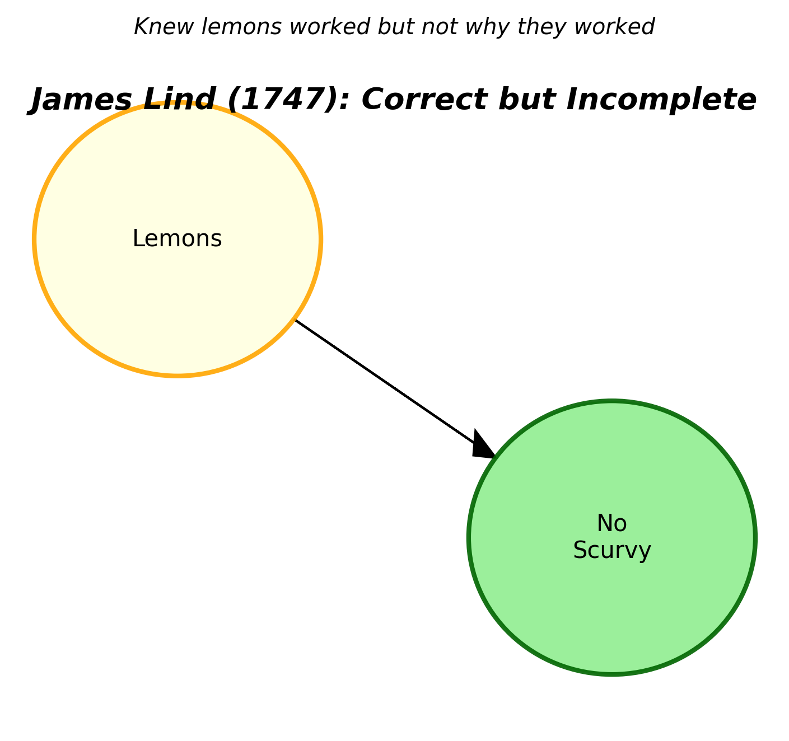
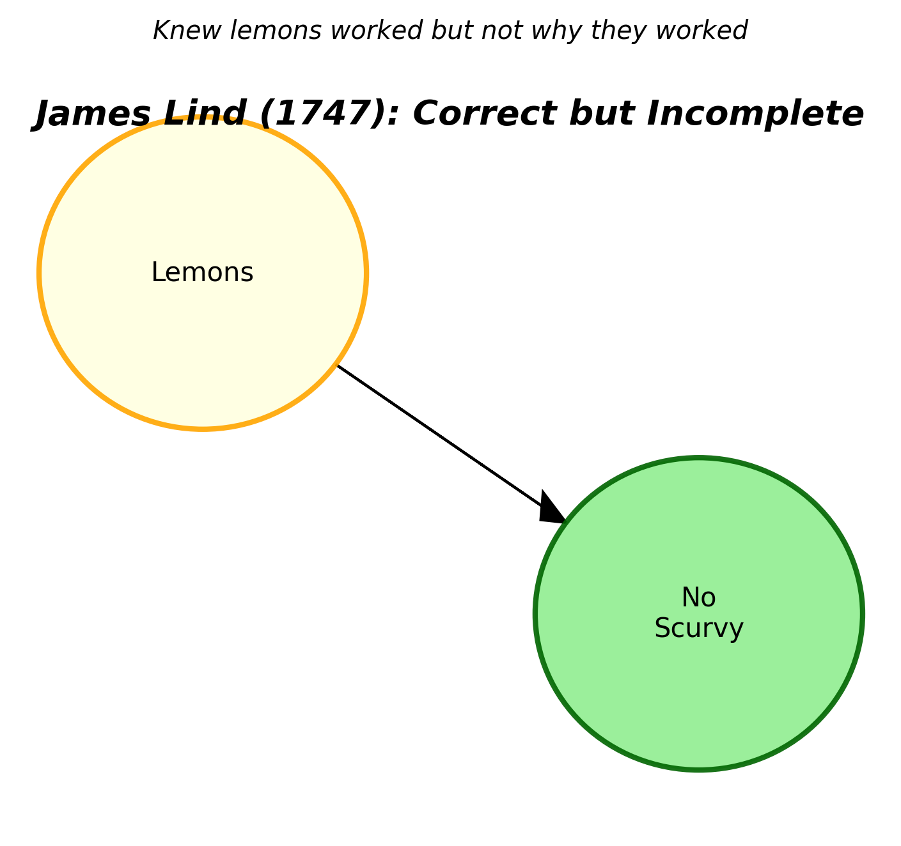
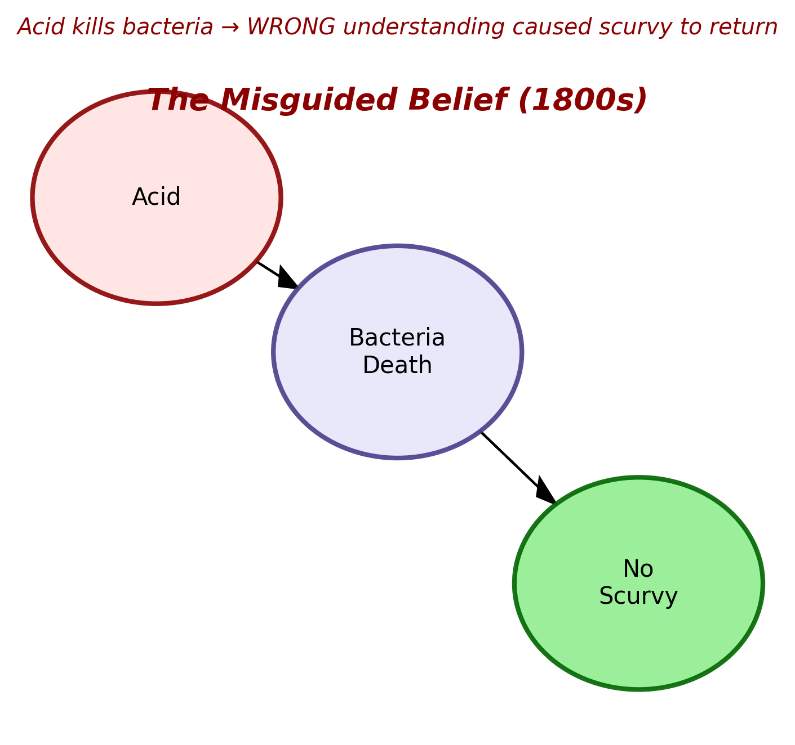
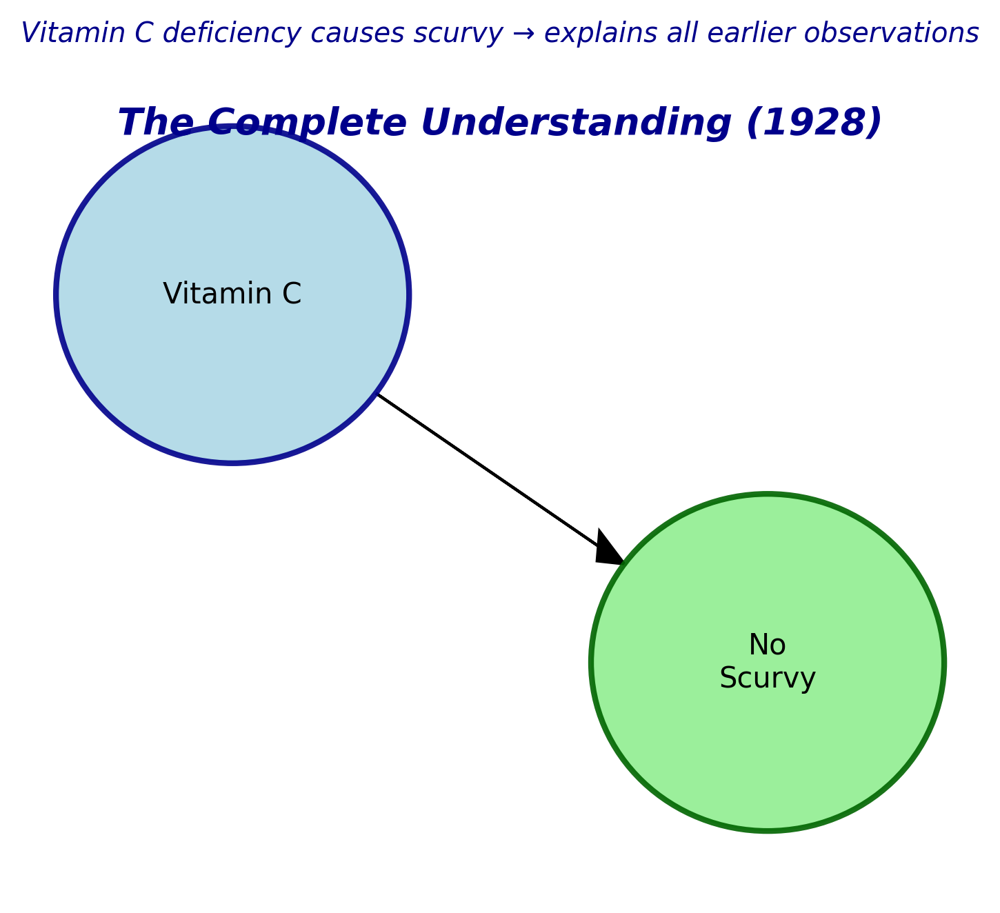

Text(0.5, 1.0, 'Knew lemons worked but not why they worked')DAG 1: The 1747 Understanding - Lemons prevent Scurvy

How a Misunderstood Cure Led to a 150-Year Tragedy
For centuries, scurvy was the scourge of seafarers. This dreadful disease, marked by bleeding gums, weakness, and eventually death, claimed the lives of countless sailors on long oceanic voyages. The story of scurvy offers a powerful lesson in data science: even when we discover effective solutions, misunderstanding the underlying mechanism can cause us to lose those solutions for over a century.
In 1747, Scottish naval surgeon James Lind conducted what many consider the first controlled clinical trial. He took 12 sailors suffering from scurvy and divided them into pairs, trying different treatments. The pair receiving citrus fruits - specifically lemons and oranges - recovered swiftly while others continued to deteriorate.
Lind had discovered a cure, but the understanding was incomplete. He knew lemons prevented scurvy, but not why they worked. This incomplete causal understanding set the stage for disaster.
Over time, a theory emerged that it was the acid in citrus fruits that killed bacteria supposedly causing scurvy. Armed with this wrong understanding, the British Navy made a catastrophic decision: they switched to limes (cheaper and less effective) and even experimented with other acidic substances like vinegar.
The misguided belief suggested that acid kills bacteria, which in turn prevents scurvy. This seemed logical at the time, but it was fundamentally incorrect. As a result, scurvy began to re-emerge in the fleet, and the original discovery was essentially lost.
It wasn’t until 1928 that Hungarian biochemist Albert Szent-Györgyi discovered the true mechanism: Vitamin C (ascorbic acid) was the essential nutrient preventing scurvy. This complete understanding finally explained why lemons worked, why limes were less effective (they had less vitamin C), and why the acid theory was wrong.
The story of scurvy demonstrates three different causal understandings of the same phenomenon, represented by these three DAGs:
Text(0.5, 1.0, 'Knew lemons worked but not why they worked')DAG 1: The 1747 Understanding - Lemons prevent Scurvy

Text(0.5, 1.0, 'Acid kills bacteria → WRONG understanding caused scurvy to return')DAG 2: The Misguided Belief - Acid kills Bacteria to Prevent Scurvy

Text(0.5, 1.0, 'Vitamin C deficiency causes scurvy → explains all earlier observations')DAG 3: The 1928 Understanding - Vitamin C Prevents Scurvy
